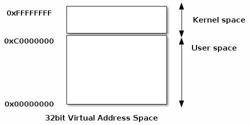
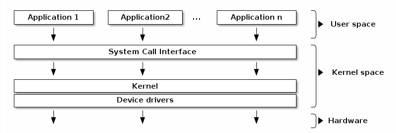
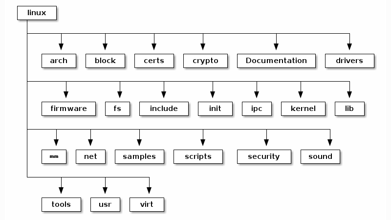
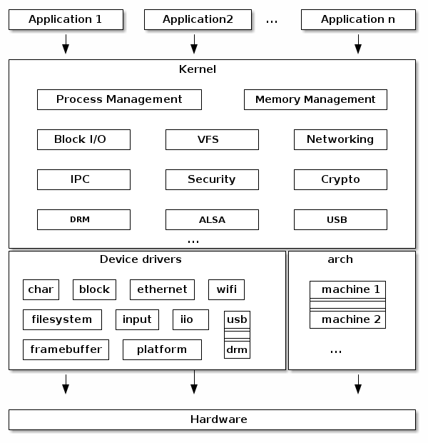
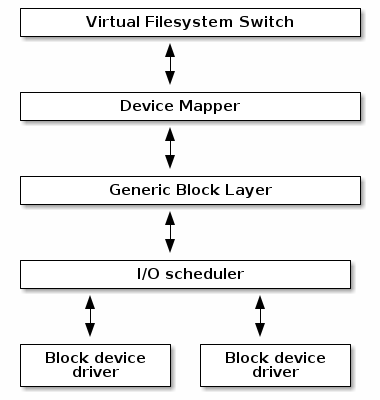
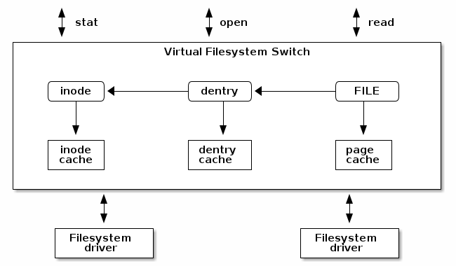
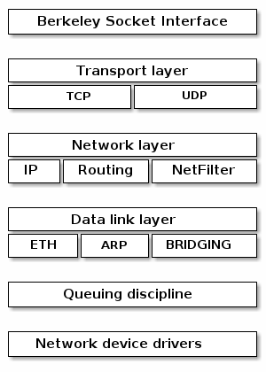

overview of linux kernel
Overview of linux kernel
ref. linux kernel labs
操作系统基本概念
这里先简单回顾一些操作系统中的基本概念，这些内容只是对Linux系统结构的一个提纲挈领的概述，如果想要了解更多的细节，还需要查阅别的资料。
User & Kernel
首先是用户(User)和内核(Kernel)的概念，内核是操作系统的一部分，以较高的权限运行，而用户则是应用的一部分，以较低的权限运行。
而用户模式和内核模式则是指处理器的执行模式，运行在内核模式下的代码能够完全地控制CPU，而运行在用户模式下的代码则存在一定的限制。
比如说，在ARM的Cortex-A75处理器下，可以通过CPUECTLR_EL1(CPU Extended Control Register, EL1)寄存器来控制CPU的一些配置，比如开启或关闭缓存预取。而想要访问这个寄存器只需要通过 MRS 汇编指令来读取寄存器，使用 MSR 指令来修改。但是如果在应用中通过内联汇编插入这两条汇编指令后，执行应用的时候会出现"illegal Instruction"错误。这是因为这两条指令只能在CPU的内核模式下执行，而应用中的指令都是CPU在用户模式下执行的。
而用户空间(User space)和内核空间(Kernel space)则是与内核和用户应用相关的虚拟内存地址空间保护的手段。

也就是说，内核空间是为内核保留的内存区域，而用户空间则是为特定用户进程保留的内存区域。内核空间的访问是受保护的，用户应用无法直接访问内核空间，而由内核模式执行的代码则能够直接访问用户空间。
Operating system architecture
下图是一个典型的操作系统结构，操作系统内核负责向多个应用以一种安全且平等的方式向多个应用提供硬件的访问和共享。

内核提供了一系列APIs以供用于应用使用，也就是所谓的系统调用。这些API与通常的函数库中的API不同，因为系统调用通常是CPU执行模式从用户模式切换到内核模式的边界。为了提供兼容性，系统调用通常很少改变。
此外，内核代码在逻辑上也可以划分为内核核心代码和设备驱动代码，设备驱动代码负责提供特定设备的访问，而内核核心代码则更加的通用。当然，内核核心代码也可以进一步划分为多个逻辑子系统，比如文件系统，网络，进程管理等。
Execution context
内核最重要的工作之一就是提供有效的中断服务，而这就与一个特殊的执行上下文相关联。
当内核收到一个中断时，将会运行在中断上下文(Interrupt Context)中，这包含一个中断处理器，此外还有一些特殊软件也会运行中中断上下文中。在中断上下文中执行的代码通常是CPU在内核模式下执行的，并且内核开发者必须了解这些代码所存在的一些限制，比如不能够调用阻塞函数或者访问用户空间。
与中断上下文相对应的就是进程上下文(Process Context)。
进程上下文就是进程当前执行的状态。进程上下文能够进入睡眠状态、可抢占状态，通常用于执行耗时的任务，获取和释放互斥锁。
中断上下文就是指中断发生，状态/优先级进入中断处理程序，而当前进程停止并保存当前状态直到中断处理完成期间的状态。中断上下文不可进入睡眠状态、不可抢占，通常执行不耗时的任务。
Linux kernel概述
Linux源码的布局如下：

这些就是Linux源码顶层文件夹：
- arch - 包含架构特定的代码；每个架构都在特定的子文件夹中实现（例如 arm、arm64、x86）
- block - 包含处理从阻塞设备(block service)读取和写入数据的块子系统代码：创建块 I/O 请求，对其进行调度（使用I/O 调度器），然后合并请求，并通过 I/O 堆栈将它们向下传递到阻塞设备驱动程序
- certs - 使用证书实现对签名验证的支持
- crypto - 各类密码算法的软件实现
- Documentation - 各种子系统的文档、Linux 内核命令行选项、sysfs 文件和格式的描述、设备树绑定
- drivers - 各种设备的驱动程序以及 Linux 驱动程序模型实现（描述驱动程序、设备总线及其连接方式）
- firmware - 各种设备驱动程序使用的二进制或十六进制固件文件
- fs - 虚拟文件系统交换机(Virtual Filesystem Switch)（通用文件系统代码）和各种文件系统驱动程序的所在地
- include - header files
- init - 在系统启动(boot)时所运行的通用初始化代码
- ipc - 实现进程间通信的各类系统调用，比如消息队列(Message queue)、信号量(semaphores)以及共享内存(shared memory)
- kernel - 进程管理的代码（包括实现内核线程和工作队列的代码），调度器，时间管理，通用irq代码以及实现锁的代码
- lib - 各种通用函数，比如排序，校验和，压缩和解压缩以及位图修改
- mm - 内存管理的代码
- net - 各种网络协议栈的实现，包括IPv4和IPv6
- samples - 各种驱动器采样
- scripts - 构建系统(build system)的一部分，用于构建模块的脚本，kconfig Linux 内核配置器，以及各种其他脚本（例如检查补丁是否符合 Linux 内核编码风格的 checkpatch.pl）
- security - Linux 安全模块框架的所在地，它允许扩展默认 (Unix) 安全模型以及实现多个此类扩展，例如 SELinux、smack、apparmor、tomoyo 等。
- sound - ALSA(Advanced Linux Sound System)的所在地
- tools - 各种用于测试或者与内核子系统交互的用户空间工具
- usr - 用于支持在内核镜像中嵌入initrd文件的代码
- virt - KVM管理程序(Kernel Virtual Machine Hypervisor)的所在地
Linux内核的结构如下图所示：

下面对结构中的一些比较重要的部分进行介绍。
Arch
这个部分就是特定于系统架构的代码，并且可以进一步划分为特定体系架构的机器特定代码。
它实现了对架构或机器特定的各种硬件位的访问，例如中断控制器、SMP 控制器、BUS 控制器、异常和中断设置、虚拟内存处理。
这里也实现了体系架构的优化函数，比如memcpy，字符串操作。
Process Management
Linux实现了Unix中的进程管理标准APIs，比如fork(), exec(), wait()，以及POSIX标准线程。
然而，在Linux中对于进程和线程的实现与其他内核尤其不同。Linux中没有实现进程或者线程的内部结构，而是使用"struct task_struct"这样的数据结构来描述被称为任务(task)的抽象调度单元。
在一个task中有指向资源的指针，比如地址空间，文件描述符，IPC id等。
属于同一个进程的任务的指针将会指向同样的资源，而属于不同进程的任务的指针将会指向不同的资源。这种特性与clone() 和 unshare() 系统调用共同实现了新的功能，也就是命名空间(namespace)。
命名空间和cgroup(control groups)由共同实现了Linux中的操作系统虚拟化，cgroup 是一种按层次组织进程并以受控和可配置的方式沿层次结构分配系统资源的机制。
Memory Management
Linux中的内存管理是一个复杂的子系统，主要处理：
- 管理物理内存：分配和释放内存
- 管理虚拟内存：包括分页，交换，请求分页以及写时复制
- 用户服务：用户地址空间的管理，比如mmap(), brk()以及共享内存
- 内核服务：SL*B(SLAB, SLOB, SLUB)分配器(allocator)，vmalloc()
对于Linux中的内存管理，主要接触的还是用户服务这部分的内容。
阻塞I/O管理
Linux中的阻塞I/O管理框架如下图所示：

Linux中的阻塞I/O管理子系统主要处理从阻塞I/O设备中读取数据或者向阻塞I/O设备中写入数据，比如创建一个阻塞I/O请求，合并并对这些请求进行排序，然后通过各种I/O调度器来将这些请求调度到阻塞设备的驱动器。
VFS(Virtual Filesystem Switch)
虚拟文件系统交换机(Virtual Filesystem Switch, VFS)实现了一种通用的文件系统以减少文件系统驱动器的重复，引入了如下几个文件系统抽象：
- inode - 用于描述磁盘上的文件，比如属性，数据块在磁盘上的位置
- dentry - 将inode关联到一个名称上
- file - 用于描述一个已开启的文件的属性，比如文件指针
- superblock - 用于描述格式化的文件系统的属性，比如数据块的数量，数据块的大小，根目录在磁盘上的位置等
VFS还实现了一个复杂的缓存机制，如下：
- inode cache - 用于缓存文件属性和文件内部的元数据
- dentry cache - 用于缓存文件系统的目录层次结构
- page cache - 用于缓存内存中的文件数据块

上图描述了VFS的整体框架。
Networking Stack

上图是Linux中的网络协议栈。
这篇文档主要是对Linux系统的各个组成部分进行一个提纲挈领的概述，如果需要了解更多的细节，还需要进一步查阅资料。